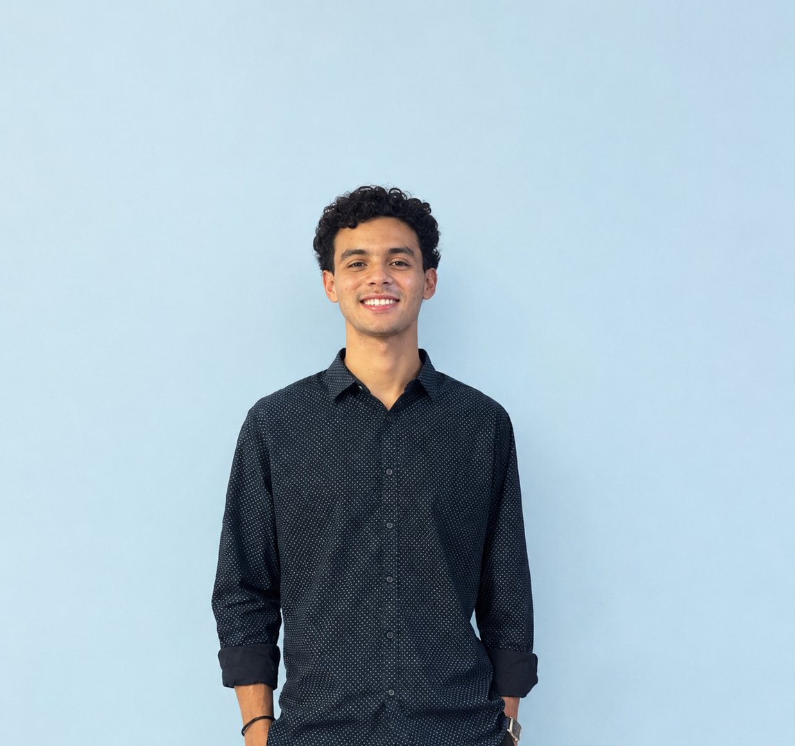

Estudiante de Ingeniería en Ciencias de la Computación
Javier Argueta
Desarrollo web y diseño de interfaces. Estudio en la Universidad Católica de Honduras (UNICAH), en Tegucigalpa.

Biografía
Soy Javier Argueta, estudiante de Ingeniería en Ciencias de la Computación en la Universidad Católica de Honduras (UNICAH), en Tegucigalpa. Nací en Juticalpa, Olancho, aunque crecí principalmente en Siguatepeque, y desde ahí llegué a Tegucigalpa a estudiar. Me gusta bastante el área de desarrollo web y diseño, y en general disfruto mucho la carrera que estoy estudiando.
Además de lo académico, me gusta mantenerme activo en la vida universitaria; formo parte del Centro Universitario Guaymura y de la organización estudiantil Espavel, espacios donde participo en distintas actividades y conozco gente nueva. Fuera de la universidad, el fútbol es algo que me apasiona bastante, tanto jugarlo como verlo.
En general me considero alguien sociable, al que le gusta involucrarse en lo que hace, ya sea en clases, en proyectos grupales o en actividades fuera del entorno académico.
- Universidad
- UNICAH, Tegucigalpa
- Carrera
- Ing. en Ciencias de la Computación
- Intereses
- Desarrollo web, diseño, fútbol
Proyectos
Algunos de los proyectos que he realizado.
Contacto
Si deseas contactarme, puedes escribirme a mi correo electrónico.
javiarguetaosorio2004@gmail.com